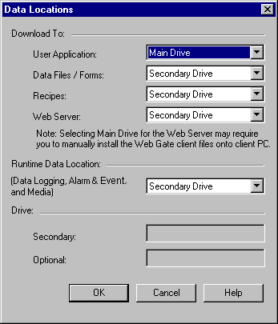

|
|
|
|
|
|
|
|
The Data Location settings enable you to specify where recipe files (.rcp), data logging files (.dat), alarm files (.csv), video files, snapshot files (.jpeg), project backup files, and web server data files are stored on the target machine. You can specify the following types of locations:
Main Drive - Depending on the target type, the main drive can be the Internal Memory (Flash Memory), CF card, Solid State Drive or hard disk drive.
Secondary Drive - Depending on the target type, the secondary drive can be a CF card/SD card, a partition on the hard disk, or a drive letter assigned to a drive. For targets that do not support a CF card/SD card, there is no secondary drive.
Optional Drive - An optional drive is a drive connected externally to the target. For example, a USB drive connected through the target's USB port is an Optional Drive.
For more information on the data locations supported by a specific target series, see Appendix 5.11.2, Supported Drives by Target Types. For a list of targets that support optional drives, see Appendix 5, Hardware Specifications.
To manage the location of run-time data files on the target machine:
In the Target properties, click the Data Locations ellipsis button.

The Data Locations dialog box displays.
Define the location of your run-time data on the target machine by defining the following:
|
Property |
Description |
|
User Application |
Specify the location on the target where the Vijeo-Designer project is downloaded to. |
|
Data Files |
Specify the Data Files location on the target machine. Data Files include the following types of files:
|
|
Recipes |
Select the recipe data file location. For more information on recipes, see Section 17.1, About Recipe. |
|
Web Server |
Select the web server data file location. For more information on web server data files, see Section 23.2.9.3, Viewing Web Server and Data Files. |
|
Runtime Data Location (Data Logging, Alarm & Event, and Media) |
Select the location (None, Secondary Drive, or Optional Drive) for the following types of run-time generated data files:
|
|
The settings listed below are only available for iPC and XBTGTW target machines. The Drive section is grayed out for all other target machines. |
|
|
Secondary |
Select the location of the Secondary drive on the supported target. |
|
Optional |
Select the location of the Optional drive on the supported target. |

You will not be able to playback recorded videos on the target machine if the locations defined for the Data Files and the Runtime Data do not match. For example, video playback won't work when Data Files is set to Main Drive and Run Time Data Location is set to Secondary or Optional drive.
To define the Secondary drive for the XBTGTW/iPC target machine, you need to use an adaptor (XBTZGADT) and place a CF card into the PCMCIA slot.